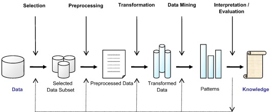
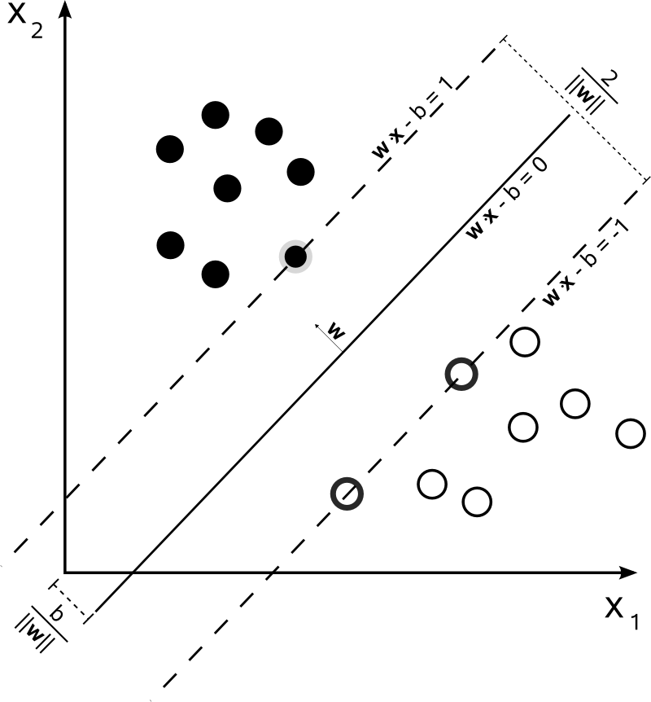

Eksploracja Danych
Zagadnienia do przygotowania na egzamin ustny z Eksploracji Danych
1. Opisz etapy eksploracji danych.

Czyszczenie danych - polega na usuwaniu braków danych, usuwaniu stałych zmiennych, imputacji braków danych oraz przygotowaniu danych do dalszych analiz.
Integracja danych - łączenie danych pochodzących z różnych źródeł.
Selekcja danych - wybór z bazy tych danych, które są potrzebne do dalszych analiz.
Transformacja danych - przekształcenie i konsolidacja danych do postaci przydatnej do eksploracji.
Eksploracja danych - zastosowanie technik wymienionych wcześniej w celu odnalezienia wzorców i zależności.
Ewaluacja modeli - ocena poprawności modeli oraz wzorców z nich uzyskanych.
Wizualizacja wyników - graficzne przedstawienie odkrytych wzorców.
Wdrażanie modeli - zastosowanie wyznaczonych wzorców.
2. Na czym polega imputacja danych? Wymień trzy metody imputacji.
Zastępowanie braków danych (zwane także imputacją danych) jest etapem procesu przygotowania danych do analiz. Nie można jednak wyróżnić uniwersalnego sposobu zastępowania braków dla wszystkich możliwych sytuacji. Wśród statystyków panuje przekonanie, że w przypadku wystąpienia braków danych można zastosować trzy strategie:
nic nie robić z brakami - co wydaje się niedorzeczne ale wcale takie nie jest, ponieważ istnieje wiele modeli statystycznych (np. drzewa decyzyjne), które świetnie radzą sobie w sytuacji braków danych. Niestety nie jest to sposób, który można stosować zawsze, ponieważ są również modele wymagające kompletności danych jak na przykład sieci neuronowe.
usuwać braki wierszami - to metoda, która jest stosowana domyślnie w przypadku kiedy twórca modelu nie zadecyduje o innym sposobie obsługi luk. Metoda ta ma swoją niewątpliwą zaletę w postaci jasnej i prostej procedury, ale szczególnie w przypadku niewielkich zbiorów może skutkować obciążeniem estymatorów. Nie wiemy bowiem jaka wartość faktycznie jest przypisana danej cesze. Jeśli jest to wartość bliska np. średniej, to nie wpłynie znacząco na obciążenie estymatora wartości oczekiwanej. W przypadku, gdy różni się ona znacznie od średniej tej cechy, to estymator może już wykazywać obciążenie. Jego wielkość zależy również od liczby usuniętych elementów. Nie jest zalecane usuwanie wielu wierszy ze zbioru danych i na podstawie okrojonego zbioru wyciąganie wniosków o populacji, ponieważ próba jest wówczas znacząco inna niż populacja. Dodatkowo jeśli estymatory są wyznaczane na podstawie zbioru wyraźnie mniej licznego, to precyzja estymatorów wyrażona wariancją spada. Reasumując, jeśli liczba wierszy z brakującymi danymi jest niewielka w stosunku do całego zbioru, to usuwanie wierszy jest sensownym rozwiązaniem.
uzupełnianie braków - to procedura polegająca na zastępowaniu braków różnymi technikami. Jej niewątpliwą zaletą jest fakt posiadania kompletnych danych bez konieczności usuwania wierszy. Niestety wiąże się to również z pewnymi wadami. Zbiór posiadający wiele braków uzupełnianych nawet bardzo wyrafinowanymi metodami może cechować się zaniżoną wariancją poszczególnych cech oraz tzw. przeuczeniem.
- Uzupełnianie średnią - braki w zakresie danej zmiennej uzupełniamy średnią tej zmiennej przypadków uzupełnionych.
- Uzupełnianie medianą - braki w zakresie danej zmiennej uzupełniamy medianą tej zmiennej przypadków uzupełnionych.
- Wypełnianie zmiennych typu wyliczeniowego, logicznego lub znakowego odbywa się najczęściej przez dobranie w miejsce brakującej wartości, elementu powtarzającego się najczęściej wśród obiektów obserwowanych.
- Jeszcze innym sposobem imputacji danych są algorytmy oparte o metodę \(k\)-najbliższych sąsiadów. Istnieją również dużo bardziej złożone algorytmy imputacji danych oparte na bardziej wyrafinowanych technikach, takich jak: predykcja modelami liniowymi, nieliniowymi, analiza dyskryminacyjna, drzewa klasyfikacyjne.
3. Na co należy zwrócić uwagę podczas uzupełniania danych?
Imputacja danych wymaga podjęcia kilku decyzji przed przystąpieniem do uzupełniania danych:
Czy dane są MAR (ang. Missing At Random) czy MNAR (ang. Missing Not At Random) (Section 1.4), co oznacza, że musimy się zastanowić jakie mogły być źródła braków danych, przypadkowe czy systematyczne?
Należy się zdecydować na formę imputacji, określając strukturę zależności pomiędzy cechami oraz rozkład błędu danej cechy?
Wybrać zbiór danych, który posłuży nam za predyktory w imputacji (nie mogą zawierać braków).
Określenie, które niepełne zmienne są funkcjami innych wybrakowanych zmiennych.
Określić w jakiej kolejności dane będą imputowane.
Określić parametry startowe imputacji (liczbę iteracji, warunek zbieżności).
Określić liczę imputowanych zbiorów.
4. Czym są braki MCAR, MAR, MNAR?
MCAR (ang. Missing Completely At Random) - z definicji to braki, których pojawienie się jest kompletnie losowe. Przykładowo gdy osoba poproszona o wypełnienie wieku w ankiecie będzie rzucać monetą czy wypełnić tą zmienną.
MAR (ang. Missing At Random) - oznacza, że obserwowane wartości i wybrakowane mają inne rozkłady ale da się je oszacować na podstawie danych obserwowanych. Przykładowo ciśnienie tętnicze u osób, które nie wypełniły tej wartości jest wyższe niż u osób, które wpisały swoje ciśnienie. Okazuje się, że osoby starsze z nadciśnieniem nie wypełniały ankiety w tym punkcie.
MNAR (ang. Missing Not At Random) - jeśli nie jest spełniony warunek MCAR i MAR, wówczas brak ma charakter nielosowy. Przykładowo respondenci osiągający wyższe zarobki sukcesywnie nie wypełniają pola “zarobki” i dodatkowo nie ma w ankiecie zmiennych, które pozwoliłyby nam ustalić, jakie to osoby.
5. Jakie znasz metody wnioskowania?
Data mining to zestaw metod pozyskiwania wiedzy na podstawie danych. Ową wiedzę zdobywamy w procesie wnioskowania na podstawie modeli. Wnioskowanie możemy podzielić na dedukcyjne i indukcyjne.
Z wnioskowaniem dedukcyjnym mamy do czynienia wówczas, gdy na podstawie obecnego stanu wiedzy potrafimy odpowiedzieć na postawione pytanie dotyczące nowej wiedzy, stosując reguły wnioskowania.
O wnioskowaniu indukcyjnym powiemy, że jest metodą pozyskiwania wiedzy na podstawie informacji ze zbioru uczącego. Znajduje ono szerokie zastosowanie w data mining i charakteryzuje się omylnością, ponieważ nawet najlepiej nauczony model na zbiorze uczącym nie zapewnia nam prawdziwości odpowiedzi w przypadku nowych danych, a jedynie je uprawdopodabnia. Esencją wnioskowania indukcyjnego w zakresie data mining, jest poszukiwanie na podstawie danych uczących modelu charakteryzującego się najlepszymi właściwościami predykcyjnymi i dającego się zastosować do zupełnie nowego zbioru danych.
6. Czym są obserwacja, atrybut, dziedzina, zbiór uczący i testowy?
Obserwacja - każdy element dziedziny \(x \in X\). Obserwacją nazywać będziemy zarówno rekordy danych ze zbioru uczącego, jak i ze zbioru testowego.
Atrybut - za jego pomocą (zestawu cech/ atrybutów) można opisać obserwację (każdy obiekt z dziedziny \(x \in X\)). W notacji matematycznaj oznaczany przez \(a: X \rightarrow A\), gdzie \(A\) jest przestrzenią wartości aatrybutów. Każda obserwacja \(x\) posiadająca \(k\) cech da się wyrazić wektorowo jako \((a_1(x),a_2(x),\dots,a_k(x))\).
Dla większości algorytmów uczenia maszynowego wyrożnia się trzy typy atrybutów:
nominalne - posiadające skończoną liczbę stanów, które nie posiadają porządku (np. płeć, rasa)
porządkowe - posiadające skończoną liczbę stanów z zachowaniem porządku (np. wykształcenie)
ciągłe - przyjmujące wartości numeryczne (np. wiek, wynagrodzenie)
Często jeden z atrybutów spełnia specjalną rolę, ponieważ stanowi realizację cechy, którą traktujemy jako wyjściową (ang. target value attribute). W tym przypadku powiemy o nadzorowanym uczeniu maszynowym. Jeśli zmiennej wyjściowej nie ma dziedzinie, to mówimy o nienadzorowanym uczeniu maszynowym.
Dziedzina - zbiór wszystkich obiektów pozostających w zainteresowaniu badacza, będących przedmiotem wnioskowania, oznaczana najczęściej przez \(X\). Przykładowo mogą to być zbiory osób, transakcji, urządzeń, instytucji, itp.
Zbiór uczący - \(T\) (ang. training set) podzbiór \(D\) dziedziny \(X\) (czyli \(T \subseteq D \subseteq X\)), gdzie zbiór \(D\) stanowi ogół dostępnych obserwacji z dziedziny \(X\). Zbiór uczący zawiera informacje dotyczące badanego zjawiska na podstawie których, dokonuje się doboru modelu, selekcji cech istotnych z punktu widzenia własności predykcyjnych lub jakości klasyfikacji, budowy modelu oraz optymalizacji jego parametrów. W przypadku uczenia z nauczycielem (nadzorowanego) zbiór \(T\) zawiera informację o wartościach atrybutów zmiennej wynikowej.
Zbiór testowy - \(T'\) (ang. test set) zbiór będący dopełnieniem zbioru uczącego do zbioru \(D\), czyli \(T' = D \backslash T\), stanowi zestaw danych służacy do oceny poprawności modelu nadzorowanego. W przypadku metod nienadorowanych raczej nie stosuje się zbiorów testowych
7. Czym jest nadmierne dopasowanie i niewystarczające dopasowanie modelu?
Nadmierne dopasowanie - sytuacja, w której model wykazuje dobre charakterystyki jakości dopasowania na zbiorze uczącym ale słabe na testowym, mówimy wtedy o zjawisku przeuczenia modelu (ang. overfitting). Oznacza to, że model wskazuje predykcję poprawnie jedynie dla zbioru treningowego ale ma słabe własności generalizacyjne. Takie modele nie przedstawiają znaczącej wartości w odkrywaniu wiedzy w sposób indukcyjny.
Niewystarczające dopasowanie - sytuacja w której parametry dopasowania modelu pokazują słabe dopasowanie, zarówno na zbiorze uczącym, jak i testowym. Takie modele również nie są użyteczne w pozyskiwaniu wiedzu na temat badanego zjawiska, a sytuację taką nazywamy niedouczeniem (ang. underfitting).
8. Wymień typy modeli uczenia maszynowego i krótki opis ich zasady działania.
Modele regresyjne Jednym z rodzajów zadań bazującym na wnioskowaniu indukcyjnym jest model regresyjny. Należy on do grupy metod nadzorowanych, których celem jest oszacowanie wartości cechy wyjściowej (która jest ilościowa) na podstawie zestawu predyktorów, które mogą być ilościowe i jakościowe. Uczenie takich modeli odbywa się poprzez optymalizację funkcji celu (np.\(MSE\)) na podstawie zbioru uczącego.
Modele klasyfikacyjne Podobnie jak modele regresyjne, modele klasyfikacyjne należą do grupy metod nadzorowanego uczenia maszynowego. Ich zadaniem jest właściwa klasyfikacja obiektów na podstawie wielkości predyktorów. Odpowiedzią modelu jest zawsze cecha typu jakościowego, natomiast predyktory mogą mieć dowolny typ. Wyróżnia się klasyfikację dwu i wielostanową. Lista modeli realizujących klasyfikację binarną jest nieco dłuższa niż w przypadku modeli z wielostanową cechą wynikową. Proces uczenia modelu klasyfikacyjnego również opiera się na optymalizacji funkcji celu. Tym razem są to zupełnie inne miary jakości dopasowania (np. trafność, czyli odsetek poprawnych klasyfikacji).
Modele grupujące Bardzo szeroką gamę modeli nienadzorowanych stanowią metody analizy skupień. Ich zadaniem jest grupowanie obiektów w możliwie najbardziej jednorodne grupy, na podstawie wartości atrybutów poddanych analizie. Ponieważ są to metody “bez nauczyciela”, to ocena ich przydatności ma nieco inny charakter i choć istnieją różne wskaźniki jakości grupowania, to trudno tu o obiektywne wskazanie najlepszego rozwiązania.
9. Czym są drzewa decyzyjne, z jakich elementów się składają?
Drzewo decyzyjne jest strukturą hierarchiczną przedstawiającą model klasyfikacyjny lub regresyjny. Stosowane są szczególnie często wówczas, gdy funkcyjna postać związku pomiędzy predyktorami a zmienną wynikową jest nieznana lub ciężka do ustalenia. Każde drzewo decyzyjne składa się z korzenia (ang. root), węzłów (ang. nodes) i liści (ang. leaves). Korzeniem nazywamy początkowy węzeł drzewa, z którego poprzez podziały (ang. splits) powstają kolejne węzły potomne. Końcowe węzły, które nie podlegają podziałom nazywamy liśćmi, a linie łączące węzły nazywamy gałęziami (ang. branches).
Jeśli drzewo służy do zadań klasyfikacyjnych, to liście zawierają informację o tym, która klasa w danym ciągu podziałów jest najbardziej prawdopodobna. Natomiast, jeśli drzewo jest regresyjne, to liście zawierają warunkowe miary tendencji centralnej (najczęściej średnią) wartości zmiennej wynikowej. Warunek stanowi szereg podziałów doprowadzający do danego węzła terminalnego (liścia). W obu przypadkach (klasyfikacji i regresji) drzewo “dąży” do takiego podziału by kolejne węzły, a co za tym idzie również liście, były jak najbardziej jednorodne ze względu na zmienną wynikową.
10. Podaj rodzaje reguł podziału.
Najczęściej występujące reguły podziału w drzewach decyzyjnych są jednowymiarowe, czyli warunek podziału jest generowany na podstawie jednego atrybutu. Istnieją podziały wielowymiarowe ale ze względu na złożoność obliczeniową są rzadziej stosowane.
Podziały dla atrybutów ze skali nominalnej
Istnieją dwa typy reguł podziału dla skali nominalnej:
oparte na wartości atrybutu (ang. value based) - wówczas funkcja testowa przyjmuje postać \[t(x) = a(x)\] czyli podział generują wartości atrybutu,
oparte na równości (ang. equality based) - gdzie funkcja testowa jest zdefiniowana jako \[t(x) = \begin{cases} 1, & \text{gdy } \; a(x) = \nu\\ 0, & \text{w przeciwnym wypadku,} \end{cases}\] gdzie
\(\nu \in A \; \text{ [nu],}\)
\(A\) - zbiór możliwych wartości \(a\).
W tym przypadky podział jest dychotomiczny (podział na takie zbiory, które nie mają ze sobą wspólnych elementów), albo obiekt ma wartość atrybutu równą \(\nu\), albo go nie ma.
Podziały dla atrybutów ze skali ciągłej
Reguły podziału stosowane do skali ciągłej, to:
oparte na nierównościach (ang. inequality based) - zdefiniowana jako \[t(x) = \begin{cases} 1, & \text{gdy } \; a(x) \leq \nu\\ 0, & \text{w przeciwnym wypadku,} \end{cases}\] gdzie
\(\nu \in A\),przedziałowa (ang. interval based) - zdefiniowana jako \[t(x)=\begin{cases} 1, & \text{gdy } \; a(x) \in I_1\\ 2, & \text{gdy } \; a(x) \in I_2\\ \, \vdots \\ k, & \text{gdy } \; a(x) \in I_k\\ \end{cases}\] gdzie
\(I_1,I_2,\dots,I_k \subset A\) stanowią rozłączny podział (przedziałmi) przeciwdziedziny \(A\).
Podziały dla atrybutów ze skali porządkowej
Podziały te mogą wykorzystywać oba wcześniej wspomniane typy, w zależności od potrzeb.
11. Opisz algorytm budowy drzewa decyzyjnego.
Stwórz początkowy węzeł (korzeń) i oznacz go jako otwarty.
Przypisz wszystkie możliwe rekordy do węzła początkowego.
Dopóki istnieją otwarte węzły wykonuj:
- wybierz węzeł \(n\), wyznacz potrzebne statystyki opisowe zmiennej zależnej dla tego węzła i przypisz wartość docelową,
- jesli kryterium zatrzymania podziału jest spełnione dla węzła \(n\) , to oznacz go jako zamknięty,
- w przeciwnym wypadku wybierz podział \(r\) elementów węzła \(n\) i dla każdego podzbioru podziału stwórz węzeł niższego rzędu (potomka) \(n_r\) oraz oznacz go jako otwarty,
- następnie przypisz wszystkie przypadki generowane podziałem \(r\) do odpowiednich węzłów potomków \(n_r\),
- oznacz węzeł \(n\) jako zamknięty.
Sposób przypisywania wartości docelowej wiąże się ściśle z rodzajem drzewa. W drzewach regresyjnych chodzi o wyliczenie średniej lub mediany dla obserwacji ujętych w danym węźle. Natomiast w przypadku drzewa klasyfikacyjnego, wyznacza się wartości prawdopodobieństw przynależności obserwacji znajdującej się w danym węźle do poszczególnych klas.
12. Jakie znasz reguły zatrzymania modelu drzewa decyzyjnego?
Kryterium zatrzymania jest warunkiem, który decyduje o tym, że dany węzeł uznajemy za zamknięty i nie dokonujemy dalszego jego podziału.
Wyróżniamy następujące kryteria zatrzymania:
Jednorodność węzła - w przypadku drzewa klasyfikacyjnego może zdarzyć się sytuacja, że wszystkie obserwacje węzła będą pochodziły z jednej klasy. Wówczas nie ma sensu dokonywać dalszego podziału węzła.
Węzeł jest pusty - zbiór przypisanych obserwacji zbioru uczącego do \(n\)-tego węzła jest pusty.
Brak reguł podziału - wszystkie reguły podziału zostały wykorzystane, zatem nie da się stworzyć potomnych węzłów, które charakteryzowałyby się większą homogenicznością.
- Wielkość drzewa - węzeł potomny ustala się jako zamknięty, gdy długość ścieżki dojścia do niego przekroczy ustaloną wartość.
Warunki ujęte w pierwszych dwóch kryteriach mogą być nieco złagodzone, poprzez zatrzymanie podziałów wówczas, gdy prawdopodobieństwo przynależenia do pewnej klasy przekroczy ustalony próg lub gdy liczebność węzła spadnie poniżej ustalonej wartości.
13. Opisz jak się buduje reguły podziału w drzewach decyzyjnych.
Reguła podziału dobierana jest w taki sposób aby zmaksymalizować zdolności generalizacyjne drzewa.Złożoność drzewa mierzona jest najczęściej przeciętną liczbą podziałów potrzebnych do dotarcia do liścia zaczynając od korzenia. Liście są najczęściej tworzone wówczas gdy dyspersja wartości wynikowej jest stosunkowo mała lub węzeł zawiera w miarę homogeniczne obserwacje ze względu na przynależność do klasy zmiennej wynikowej.
W przypadku drzew regresyjnych zmienność na poziomie węzłów jest dobrą miarą służącą do definiowania podziału w węźle. I tak, jeśli pewien podział generuje nam stosunkowo małe dyspersje wartości docelowych w węzłach potomnych, to można ten podział uznać za właściwy.
Jeśli \(T_n\) oznacza zbiór rekordów należących do węzła \(n\), a \(T_{n, \, t\, =\, r}\) są podzbiorami generowanymi przez podział \(r\) w węzłach potomnych dla \(n\), to dyspersję wartości docelowej \(f\) będziemy oznaczali następująco \[\text{disp}_{T_{n, \, t\, =\, r}}(f)\] Regułę podziału możemy określać poprzez minimalizację średniej ważonej dyspersji wartości docelowej następującej postaci \[\text{disp}_n(f|t) = \sum\limits_{r \in R_t}\frac{|T_{n, \, t\, =\, r}|}{|T_n|}\text{disp}_{T_{n, \, t\, =\, r}}(f)\] gdzie
\(||\) oznacza moc zbioru,
\(R_t\) oznacza zbiór wszystkich możliwych wartości reguły podziału.
Czasami wygodniej będzie maksymalizować przyrost dyspersji (lub spadek) \[\Delta \, \text{disp}_n(f|t) = \text{disp}_n(f) - \sum\limits_{r \in R_t}\frac{|T_{n, \, t\, =\, r}|}{|T_n|}\text{disp}_{T_{n, \, t\, =\, r}}(f)\]
Miarą heterogeniczności węzłów ze względu na zmienną wynikową (ang. impurity) w drzewach klasyfikacyjnych, która pozwala na tworzenie kolejnych podziałów węzła, są najczęściej wskaźnik Gini’ego i entropia.
Entropię podzbioru uczącego w węźle \(\mathbf{n}\), wyznaczamy według wzoru \[E_{T_\mathbf{n}}(c|t) = \sum\limits_{x \in R_t}\frac{|T_{\mathbf{n}, \, t\, =\, r}|}{|T_\mathbf{n}|}E_{T_{\mathbf{n}, \, t\, =\, r}}(c)\] gdzie
\(t\) jest podziałem (kandydatem),
\(r\) jest potencjalnym wynikiem podziału \(t\),
\(c\) jest oznaczeniem klasy zmiennej wynikowej,
natomiast \[E_{T_{\mathbf{n}, \, t\, =\, r}}(c) = \sum\limits_{d \in C} - P_{T_{\mathbf{n}, \, t\, =\, r}}(c = d)\log\left[P_{T_{\mathbf{n}, \, t\, =\, r}}(c = d)\right]\]przy czym \(P_{T_{\mathbf{n}, \, t\, =\, r}}(c = d)=P_{T_{\mathbf{n}}}(c = d|t=r)\)
Podobnie definiuje się indeks Gini’ego \[Gi_{T_\mathbf{n}}(c|t) = \sum\limits_{x \in R_t}\frac{|T_{\mathbf{n}, \, t\, =\, r}|}{|T_\mathbf{n}|}Gi_{T_{\mathbf{n}, \, t\, =\, r}}(c)\] gdzie \[Gi_{T_{\mathbf{n}, \, t\, =\, r}}(c) = \sum\limits_{d \in C}P_{T_{\mathbf{n}, \, t\, =\, r}}(c = d) \,\cdot\,(1-P_{T_{\mathbf{n}, \, t\, =\, r}}(c = d))=1-\sum\limits_{d \in C}P^2_{T_{\mathbf{n}, \, t\, =\, r}}(c = d)\]
Dla tak zdefiniowanych miar “nieczystości” węzłów, podziału dokonujemy w taki sposób, aby zminimalizować współczynnik Gini’ego lub entropię. Im niższe miary nieczystości, tym bardziej obserwacje znajdujące się w węźle są monokulturą (prawie wszystkie są w jednej klasie). Nierzadko korzysta się również z współczynnika przyrostu informacji (ang. information gain) \[\Delta E_{T_n}(c|t) = E_{T_n}(c) - E_{T_n}(c|t)\] Istnieje również jego odpowiednik dla indeksu Gini’ego. W obu przypadkach optymalnego podziału szukamy poprzez maksymalizację przyrostu informacji.
14. Opisz przycinanie drzewa redukujące błąd.
Jedną ze strategii przycinania drzewa jest przycinanie redukujące błąd (ang. reduced error pruning). Polega ono na porównaniu błędów (najczęściej używana jest miara odsetka błędnych klasyfikacji lub MSE) liścia \(l\) i węzła do którego drzewo przycinamy \(n\) na całkiem nowym zbiorze uczącym \(R\). Niech \(e_R(l)\) i \(e_R(n)\) oznaczają odpowiednio błędy liścia i węzła na zbiorze \(R\). Przez błąd węzła rozumiemy błąd pod-drzewa o korzeniu w węźle \(n\). Wówczas jeśli zachodzi warunek \[e_R(l)\leq e_R(n)\] to zaleca się zastąpić węzeł \(n\) liściem \(l\).
15. Opisz przycinanie drzewa minimalizujące błąd.
Przycinanie minimalizujące błąd opiera się na spostrzeżeniu, że błąd drzewa przyciętego charakteryzuje się zbyt pesymistyczną oceną (szacowaną na zbiorze testowym) i dlatego wymaga korekty. Węzeł drzewa klasyfikacyjnego \(n\) zastępujemy liściem \(l\), jeśli \[\hat e_T(l)\leq \hat e_T(n)\] gdzie\(\hat e_T(n)\) - miara błędu poddrzewa stojącego pod węzłem \(n\)
\(\hat e_T(l)\) - miara błędu na liściu liczona na podstwaie prawdopodobieństwa przynależności do danej klasy
\(\hat e\) - szacunek błędu
W przypadku drzewa regresyjnego znajdujemy wiele analogii, ponieważ jeśli dla pewnego zbioru rekordów \(T\) spełniony jest warunek \[\text{mse}_T(l) \leq \text{mse}_T(n)\] gdzie
\(l\) i \(n\) oznaczają odpowiednio liść i węzeł,
to wówczas zastępujemy węzeł \(n\) przez liść \(l\).
Estymatory wyznaczone na podstawie niewielkiej próby, mogą być obarczone znaczącym błędem. Wyliczanie błędu średnio-kwadratowego dla podzbioru nowych wartości może się charakteryzować takim obciążeniem. Dlatego stosuje się statystyki opisowe z poprawką, której pochodzenie może mieć trzy źródła: wiedza merytoryczna na temat szukanej wartości, założeń modelu lub na podstawie wyliczeń opartych o cały zbiór wartości.
https://dax44.github.io/datamining/drzewa-decyzyjne.html#przycinanie-minimalizuj%C4%85ce-b%C5%82%C4%85d
16. Opisz przycinanie drzewa ze względu na współczynnik złożoności drzewa.
Przycinanie ze względu na współczynnik złożoności drzewa (ang. cost-complexity pruning) polega na wprowadzeniu “kary” za zwiększoną złożoność drzewa. Drzewa klasyfikacyjne przycinamy gdy spełniony jest warunek \[e_T(l) \leq e_T(n) + \alpha C(n)\] gdzie
\(\alpha\) jest parametrem wagi kary za złożoność drzewa,
\(C(n)\) oznacza złożoność drzewa mierzoną liczbą liści
Wspomniane kryterium przycięcia dla drzew regresyjnych bazuje na względnym błędzie średnio-kwadratowym (ang. relative square error)
17. Opisz zalety i wady drzew decyzyjnych.
Zalety:
łatwe w interpretacji;
nie wymagają żmudnego przygotowania danych (brak standaryzacji, wprowadzania zmiennych binarnych, dopuszcza występowanie braków danych);
działa na obu typach zmiennych - jakościowych i ilościowych;
dopuszcza nieliniowość związku między zmienną wynikową a predyktorami;
odporny na odstępstwa od założeń;
pozwala na obsługę dużych zbiorów danych.
Wady:
brak jawnej postaci zależności;
zależność struktury drzewa od użytego algorytmu;
przegrywa jakością predykcji z innymi metodami nadzorowanego uczenia maszynowego.
18. Opisz zasadę działania modeli bagging.
Bagging ma na celu zmniejszenie wariancji modelu pojedynczego drzewa. Podobnie jak technika bootstrap, w której statystyki są wyliczane na wielu próbach pobranych z tego samego rozkładu (próby), w metodzie bagging losuje się wiele prób ze zbioru uczącego (najczęściej poprzez wielokrotne losowanie próby o rozmiarze zbioru uczącego ze zwracaniem), a następnie dla każdej próby bootstrapowej buduje się drzewo. W ten sposób otrzymujemy \(B\) drzew decyzyjnych \(\hat f ^1 (x), \hat f ^2 (x), \dots, \hat f ^B (x)\). Na koniec poprzez uśrednienie otrzymujemy model charakteryzujący się większą precyzją \[\hat f_{\text{bag}}(x) = \frac{1}{B}\sum\limits^{B}_{b=1}\hat f ^b (x)\] Ponieważ podczas budowy drzew na podstawie prób bootstrapowych nie kontrolujemy złożoności, to w rezultacie każde z drzew może charakteryzować się dużą wariancją. Poprzez uśrednianie wyników pojedynczych drzew otrzymujemy mniejsze obciążenie ale również przy dostatecznie dużej liczbie prób (\(B\) często liczy się w setkach, czy tysiącach) zmniejszamy wariancję “średniej” predykcji z drzew. Oczywiście metodę tą trzeba dostosować do zadań klasyfikacyjnych, ponieważ nie istnieje średnia klasyfikacji z wielu drzew. W miejsce średniej stosuje się modę, czyli wartość dominującą.
W przypadku metody bagging interpretacja jest znacznie utrudniona, ponieważ jej wynik składa się z agregacji wielu drzew. Można natomiast ocenić ważność predyktorów (ang. variable importance). I tak, przez obserwację spadku \(RSS\) dla baggingu regresyjnego przy zastosowaniu danego predyktora w podziałach drzewa i uśrednieniu wyniku otrzymamy wskaźnik ważności predyktora dużo lepszy niż dla pojedynczego drzewa. W przypadku baggingu klasyfikacyjnego w miejsce \(RSS\) stosujemy indeks Gini’ego
19. Opisz zasadę działania lasów losowych.
Lasy losowe są uogólnieniem metody bagging, polegającą na losowaniu dla każdego drzewa wchodzącego w skład lasu \(m\) predyktorów spośród \(p\) dostępnych, a następnie budowaniu drzew z wykorzystaniem tylko tych predyktorów. Dzięki temu za każdy razem drzewo jest budowane w oparciu o nowy zestaw cech (najczęściej przyjmujemy \(m = \sqrt{p}\). W przypadku modeli bagging za każdym razem najsilniejszy predyktor wchodził w skład zbioru uczącego, a co za tym idzie również uczestniczył w tworzeniu reguł podziału. Wówczas wiele drzew zawierało reguły stosujące dany atrybut, a wtedy predykcje otrzymywane za pomocą drzew były skorelowane. Dlatego nawet duża liczba prób bootstrapowych nie zapewniała poprawy precyzji.
20. Opisz zasadę działania metody boosting.
W metodzie boosting nie stosuje się prób bootstrapowych ale odpowiednio modyfikuje się drzewo wyjściowe w kolejnych krokach na tym samym zbiorze uczącym.
Algorytm dla drzewa regresyjnego jest następujący:
Ustal \(\hat f(x) = 0\) i \(r_i = y_i\) dla każdego \(i\) w zbiorze uczącym.
Dla \(b = 1,2,\dots ,B\) powtarzaj:
naucz drzewo \(\hat f ^b\) o \(d\) regułach podziału (czyli \(d+1\) liściach) na zbiorze \((X_i,r_i)\),
zaktualizuj drzewo do nowej “skurczonej” wersji \(\hat f(x) \leftarrow \hat f(x) + \lambda \hat f^b (x)\),
zaktualizuj reszty \(r_i \leftarrow r_i - \lambda \hat f^b (x_i)\),
- Wyznacz boosted model \(\hat f(x) = \sum \limits ^B _{b=1} \lambda \hat f^b(x)\)
Uczenie drzew do modelu klasyfikacyjnego metodą boosting przebiega w podobny sposób. Wynik uczenia drzew metodą boosting zależy od trzech parametrów:
Liczby drzew \(B\). W przeciwieństwie do metody bagging i lasów losowych, zbyt duże \(B\) może doprowadzić do przeuczenia modelu. \(B\) ustala się najczęściej na podstawie walidacji krzyżowej.
Parametru “kurczenia” (ang. shrinkage) \(\lambda\). Kontroluje on szybkość uczenia się kolejnych drzew. Typowe wartości \(\lambda\) to \(0.01\) lub \(0.001\). Bardzo małe \(\lambda\) może wymagać dobrania większego \(B\), aby zapewnić dobrą jakość predykcyjną modelu.
Liczby podziałów w drzewach \(d\), która decyduje o złożoności drzewa. Bywa, że nawet \(d=1\) daje dobre rezultaty, ponieważ model wówczas uczy się powoli.
21. Czym są klasyfikatory liniowe?
Obszerną rodzinę klasyfikatorów stanowią modele liniowe (ang. linear classification models). Klasyfikacji w tej rodzinie technik dokonuje się na podstawie modeli funkcji kombinacji liniowej predyktorów. Jest to ujęcie parametryczne, w którym klasyfikacji nowej wartości dokonujemy na podstawie atrybutów obserwacji i wektora parametrów. Uczenie na podstawie zestawu treningowego polega na oszacowaniu parametrów modelu. W odróżnieniu od metod nieparametrycznych postać modelu tym razem jest znana. Każdy klasyfikator liniowy składa się z funkcji wewnętrznej (ang. inner representation function) i funkcji zewnętrznej (ang. outer representation function).
Pierwsza jest funkcją rzeczywistą parametrów modelu i wartości atrybutów obserwacji \[g(x) = F(\text a(x), \text w) = \sum \limits ^p _{i=0} w_i a_i (x) = \text w \circ \text a(x), \quad \text{przyjmując, że }\;a_0(x) = 1\]
Funkcja zewnętrzna przyporządkowuje binarnie klasy na podstawie wartości funkcji wewnętrznej. Istnieją dwa główne typy tych klasyfikacji:
brzegowa - przyjmujemy, że funkcje wewnętrzne tworzą granice zbiorów obserwacji różnych klas,
probabilistyczna - bazująca na tym, że funkcje wewnętrzne mogą pośrednio wykazywać prawdopodobieństwo przynależności do danej klasy.
największe prawdopodobieństwo,
funkcję najmniejszego kosztu błędnej klasyfikacji,
krzywych ROC (ang. Receiver Operating Characteristic).
reprezentacji progowej (ang. threshold representation) - najczęściej przy podejściu brzegowym,
reprezentacji logistycznej (ang. logit representation) - przy podejściu probabilistycznym.
Pierwsza dzieli przestrzeń obserwacji za pomocą hiperpłaszczyzn na obszary jednorodne pod względem przynależności do klas. Druga jest próbą parametrycznej reprezentacji prawdopodobieństw przynależności do klas.
Klasyfikacji na podstawie prawdopodobieństw można dokonać na różne sposoby, stosując:
Podejście brzegowe lub probabilistyczne prowadzi najczęściej do dwóch typów reprezentacji funkcji zewnętrznej:
Wady klasyfikatorów liniowych
22. Opisz reprezentację progową.
W przypadku klasyfikacji dwustanowej, dziedzina jest dzielona na dwa regiony (pozytywny i negatywny) poprzez porównanie funkcji zewnętrznej z wartością progową. Bez straty ogólności można sprawić, że będzie to wartość \(0\) \[h(x) = H(g(x)) = \begin{cases}1, \quad \text{jeśli } \, g(x) \geq 0 \\ 0, \quad \text{w przeciwnym przypadku}\end{cases}\] Czasami używa się parametryzacji \(\{-1,1\}\). Przez porównanie \(g(x)\) z \(0\) definiuje się hiperpłaszczyznę w \(p\)-wymiarowej przestrzeni, która rozdziela dziedzinę na regiony pozytywne i negatywne. W tym ujęciu mówimy o liniowej separowalności obserwacji różnych klas, jeśli istnieje hiperpłaszczyzna je rozdzielająca.
23. Opisz reprezentację logitową.
Najbardziej popularną reprezentacją parametryczną stosowaną w klasyfikacji jest reprezentacja logitowa \[P(y=1|x) = \frac{e^{g(x)}}{e^{g(x)}+1}\]-
Wówczas \(g(X)\) nie reprezentuje bezpośrednio \(P(y=1|x)\) ale jego logit \[g(x) = \text{logit}(P(y=1|x))\]
-
gdzie
\(\text{logit}(p)=\text{ln}\left(\frac{p}{1-p}\right)\)
Dlatego właściwa postać reprezentacji jest następująca \[P(y=1|x) = \text{logit}^{-1}(g(x))\]
Jednak zaletą reprezentacji logitowej, w porównaniu do progowej, jest to, że można wyznaczyć prawdopodobieństwa przynależności do obu klas. W przypadku klasyfikacji wielostanowej uczymy tyle funkcji \(h\) ile jest klas.
24. Opisz konstrukcję liniowych modeli dyskryminacyjnych (Fishera lub Welcha).
Podejście Fishera wykorzystuje analizę wariancji, podczas gdy Welch skupił się na klasyfikacji minimalizującej prawdopodobieństwo błędnej klasyfikacji
25. Czym są klasyfikatory bayesowskie? Zalety i wady?
Całą gamę klasyfikatorów opartych na twierdzeniu Bayesa nazywać będziemy bayesowskimi. \[P(A|B) = \frac{P(A)P(B|A)}{P(B)}\] gdzie
\(P(B)>0\)
Bayesowskie reguły podejmowania decyzji dały podstawy takich metod jak:
liniowa analiza dyskryminacyjna,
kwadratowa analiza dyskryminacyjna.
W ustaleniu klasyfikatora bayesowskiego będzie nam przyświecała cały czas ta sama reguła: jeśli znam wartości cech charakteryzujących badane obiekty oraz klasy do których należą (w próbie uczącej), to na ich podstawie mogę wyznaczyć miary prawdopodobieństw a posteriori, które pomogą mi w ustaleniu klasy do której należy nowy testowy element.
Zalety:
prostota konstrukcji i prosty algorytm,
jeśli jest spełnione założenie warunkowej niezależności, to ten klasyfikator działa szybciej i czasem lepiej niż inne metody klasyfikacji,
nie potrzebuje dużych zbiorów danych do estymacji parametrów.
Wady:
często nie spełnione założenie o warunkowej niezależności powoduje obciążenie wyników,
brak możliwości wprowadzania interakcji efektów kilku zmiennych,
potrzebuje założenia normalności warunkowych gęstości w przypadku ciągłych atrybutów,
często istnieją lepsze klasyfikatory.
26. Opisz zasadę działania naiwnego klasyfikatora Bayesa.
W naiwnym klasyfikatorze Bayesa zakłada się niezależność warunkową poszczególnych atrybutów względem klasy do której ma należeć (wg hipotezy) obiekt. Założenie to często nie jest spełnione i stąd nazwa przymiotnik “naiwny”.
Definicja naiwnego klasyfikatora bayesowskiego różni się od klasyfikatora MAP tylko podejściem do prawdopodobieństwa a posteriori.
\[h_{\text{NB}} = \text{arg} \max\limits_{h_j \in\mathbf{H}}P(h_j)\prod\limits^p_{i=1}P(a_i=v_i|h_j)\] gdzie
\(h_j\) oznacza hipotezę (decyzję), że badany obiek należy do \(j\)-tej klasy,
\(P(h_j) = P_T(h_j) =\frac{|T^j|}{|T|}\) jest prawdopodobieństwiem a priori zajścia hipotezy \(h_j\),
\(P(a_i=v_i|h_j) = P_{T^j}(a_i=v_i) = \frac{|T^j_{a_i=v_i}|}{|T^j|}\) jest prawdopodobieństwem a posteriori dla i-tego atrybutu.
\(T\) - zbiór danych uczących (treningowych),
\(T^j\) - zbiór danych uczących dla których przyjęliśmy decyzję o przynależności do \(j\)-tej klasy,
\(T^j_{a_i=v_i}\) - zbiór danych uczących o wartości atrybutu \(a_i\) równej \(v\) i \(j\)-tej klasy,
\(\mathbf{H}\) - przestrzeń hipotez,
\(c\) - prawdziwy stan obiektu.
Zarówno prawdopodobieństwo a priori jak i a posteriori są wyznaczane na podstawie próby.
27. Opisz regułę działania modeli kNN.
Technika \(k\) najbliższych sąsiadów (ang.\(k\)-Nearest Neighbors) przewiduje wartość zmiennej wynikowej na podstawie \(k\) najbliższych obserwacji zbioru uczącego. W przeciwieństwie do modeli liniowych, nie posiada ona jawnej formy i należy do klasy technik nazywanych czarnymi skrzynkami (ang. black box). Może być wykorzystywana, zarówno do zadań klasyfikacyjnych, jak i regresyjnych. W obu przypadkach predykcja dla nowych wartości predyktorów przebiega podobnie.
Niech \(x_0\) będzie obserwacją, dla której poszukujemy wartości zmiennej wynikowej \(y_0\). Na podstawie zbioru obserwacji \(x \in T\) zbioru uczącego wyznacza się \(k\) najbliższych sąsiadów (metrykę można wybierać dowolnie, choć najczęściej jest to metryka euklidesowa), gdzie \(k\) jest z góry ustaloną wartością. Następnie, jeśli zadanie ma charakter klasyfikacyjny, to \(y_0\) przypisuje się modę zmiennej wynikowej obserwacji będących \(k\) najbliższymi sąsiadami. W przypadku zadań regresyjnych \(y_0\) przypisuje się średnią lub medianę.
Olbrzymie znaczenie dla wyników predykcji na podstawie metody kNN ma dobór metryki. Nie istnieje obiektywna technika wyboru najlepszej metryki, dlatego jej doboru dokonujemy metodą prób i błędów. Należy dodatkowo pamiętać, że wielkości mierzone \(x\) mogą się różnić zakresami zmienności, a co za tym idzie, mogą znacząco wpłynąć na mierzone odległości pomiędzy punktami. Dlatego zaleca się standaryzację zmiennych przed zastosowaniem metody kNN.
Kolejnym parametrem, który ma znaczący wpływ na predykcję, jest liczba sąsiadów \(k\). Wybór zbyt małej liczby \(k\) może doprowadzić do przeuczenia modelu, z kolei zbyt duża liczba sąsiadów powoduje obciążenie wyników. Dopiero dobór odpowiedniego \(k\) daje model o stosunkowo niskiej wariancji i obciążeniu. Najczęściej liczby \(k\) poszukujemy za pomocą próbkowania.
Wówczas w zależności od postaci funkcji bazowej otrzymujemy modele z różnymi poziomami elastyczności. Zbiory wszystkich funkcji bazowych definiowanych w ten sposób tworzy słownik funkcji bazowych \(\mathbf{D}\)
28. Czym są uogólnione modele addytywne?
Modele liniowe, jako techniki klasyfikacji i regresji, mają niewątpliwą zaletę - jawna postać zależności pomiędzy predyktorami i zmienną wynikową. Często w rzeczywistości tak uproszczony model nie potrafi oddać złożoności natury badanego zjawiska. Dlatego powstał pomysł aby w miejsce kombinacji liniowej predyktorów wstawić kombinację liniową ich funkcji, czyli \[E(Y|X) = f(X) = \sum\limits^M_{i=1}\beta_mh_m(x)\] gdzie
\(h_m:\mathbb{R}^d \rightarrow \mathbb{R}\) nazwyana jest często funkcją bazową (ang. linear basis expansion) Wówczas w zależności od postaci funkcji bazowej otrzymujemy modele z różnymi poziomami elastyczności. Zbiory wszystkich funkcji bazowych definiowanych w ten sposób tworzą słownik funkcji bazowych \(\mathcal{D}\). Aby kontrolować złożoność modeli, mając do dyspozycji tak zasobny słownik, wprowadza się następujące podejścia:
- ogranicza się klasę dostępnych funkcji bazowych,
- włącza się do modelu jedynie te funkcje ze słownika \(\mathcal{D}\), które istotnie poprawiają dopasowanie modelu,
- używa się metod penalizowanych, czyli dopuszcza się stosowanie wszystkich funkcji bazowych ze słownika \(\mathcal{D}\), ale współczynniki przy nich stojące są ograniczane.
Przez uogólnione modele addytywne (ang. Generalized Additive Models) rozumiemy klasę modeli, które poprzez funkcję łączącą, opisują warunkową wartość zmiennej wynikowej w następujący sposób \[g(E(X|Y)) = g(\mu(X)) = \alpha + f_1(X_1) + \ldots + f_d(X_d)\] gdzie
\(g\) jest funkcją łączącą.
Najczęściej stosowanymi funkcjami łączącymi są:
\(g(\mu) = \mu\) - stosowana w modelach, gdy zmienna wynikowa ma rozkład normalny;
\(g(\mu) = \text{logit}\,\mu\) - stosowana, gdy zmienna wynikowa ma rozkład dwumianowy (rozkład Bernoulliego);
\(g(\mu) = \text{probit}\,\mu\) - stosowana również w przypadku gdy zmienna ma rozkład dwumianowy, a \(\Phi^{-1}\) oznacza odwrotność dystrybuanty standaryzowanego rozkładu normalnego;
\(g(\mu) = \log\,\mu\) - stosowana, gdy zmienna wynikowa jest zmienną typu zliczeniowego (rozkład Poissona).
IBM: PROBIT można wykorzystać do oszacowania wpływu jednej lub większej liczby zmiennych niezależnych na dychotomiczną zmienną zależną (np. martwe lub żywe, zatrudnione lub bezrobotne, produkt zakupiony lub nie).
29. Opisz zasadę działania modeli SVM dla dwóch klas liniowo separowalnych.
Metoda wektorów nośnych (ang. Support Vector Machines) to metoda klasyfikacji obserwacji na podstawie cech (atrybutów). Jest techniką nadzorowaną tzn., że w próbie uczącej występują zarówno cechy charakteryzujące badane obiekty jak i ich przynależność do klasy.

Istotą tej metody jest znalezienie wektorów nośnych, definiujących hiperpowierzchnie optymalnie separujące obiekty w homogeniczne grupy.
Niech \(D\) będzie zbiorem \(n\) punktów w \(d\)-wymiarowej przestrzeni określonych następująco \((\vec{x_i}, y_i)\), \(i=1,\dots,d\), gdzie \(y_i\) przyjmuje wartości \(-1\) lub \(1\) w zależności od tego do której grupy należy (zakładamy istnienie tylko dwóch grup). Poszukujemy takiej hiperpłaszczyzny, która maksymalizuje margines pomiędzy punktami obu klas w przestrzeni cech \(\vec x\).

Margines ten jest określany jako najmniejsza odległość pomiędzy hiperpłaszczyzną i elementami z każdej z grup.
Dowolna hiperpłaszczyzna może być zapisana równaniem \(\vec w \vec x - b = 0\) gdzie
\(\vec w\) jest waktorem normalnym do hiperpłaszczyzny.
Jeśli dane są liniowo separowalne to, można wybrać takie dwie hiperpłaszczyzny, że odległość pomiędzy nimi jest największa.
Równania tych hiperpłaszczyzn dane są wzorami \[\vec w \vec x - b = 1, \quad \vec w \vec x - b = -1\] Odległość pomiędzy tymi hiperpłaszczyznami wynosi \(\frac{2}{||\vec w||}\). Zatem żeby zmaksymalizować odległość pomiędzy hiperpłaszczyznami (margines) musimy zminimalizować \(\frac{||\vec w||}{2}\).
Dodatkowo, żeby nie pozwolić aby punkty wpadały do marginesu musimy nałożyć dodatkowe ograniczenia \[\begin{align}
\vec w \vec x_i - b & \geq 1, \quad y_i = 1 \\
\vec w \vec x_i - b & \leq -1, \; y_i = -1
\end{align}\] Co można zapisać \(y_i(\vec w \vec x_i - b) \geq 1, \; 1\leq i \leq n\).
Zatem \(\vec w\) i \(b\) minimalizujące \(||\vec w||\) przy jednoczesnym spełnieniu warunku definiują klasyfikator postaci \[\vec x \rightarrow \text{sgn}(\vec w \vec x - b)\] Z racji, że \(||\vec w||\) jest określona jako pierwiastek sumy kwadratów poszczególnych współrzędnych wektora, to częściej w minimalizacji stosuje się\(||\vec w||^2\).
Sformułowany powyżej problem należy do grupy optymalizacji funkcji kwadratowej przy liniowych ograniczeniach. Rozwiązuje się go metodą mnożników Lagrange’a. \[L(\vec w,b,\alpha) = \frac{1}{2}||\vec w||^2 - \sum\limits^n_{i=1}\alpha_i(y_i(\vec w \vec{x_i} - b) - 1)\] gdzie
\(\alpha_i\) są mnożnikami Lagrange’a.
30. Na czym polega metoda jądrowa w SVM?
Metoda jądrowa dla SVM pozwala na nieliniowy kształt brzegu obszaru decyzyjnego.
Zasada działania polega na znalezieniu takiego jądra przekształcenia (ang. kernel) \(\phi\), które odwzoruje przestrzeń \(d\)-wymiarową w \(d'\)-wymiarową, gdzie \(d'>d\) taką, że \(D_\phi=\{\phi(\vec{x_i}), y_i\}\) jest możliwie jak najbardziej separowalna.

Dla funkcji jądrowej określonej wzorem \(k(\vec{x_i},\vec{x_j})=\phi(\vec{x_i})\phi(\vec{x_j})\) minimalizujemy wyrażenie \[L(\alpha_i) = \sum\limits^n_{i=1}\alpha_i+\frac{1}{2}\sum\limits^n_{i=1}\sum\limits^n_{j=1}\alpha_i\alpha_jy_iy_jk(\vec{x_i},\vec{x_j})\] przy warunkach \[\sum\limits^n_{n=1}\alpha_iy_i =0, \quad0\leq \alpha_i\leq \frac{1}{2n\lambda}\]
Najczęściej stosowanymi funkcjami jądrowymi są:
wialomianowa \(k(\vec{x_i},\vec{x_j}) = (a\vec{x_i}'\vec{x_j} + b)^q\),
gaussowska \(k(\vec{x_i},\vec{x_j}) = exp(-\gamma||\vec{x_i} - \vec{x_j}||^2)\),
Laplace’a \(k(\vec{x_i},\vec{x_j}) = exp(-\gamma||\vec{x_i} - \vec{x_j}||)\),
hiperboliczna \(k(\vec{x_i},\vec{x_j}) = \text{tanh}(\vec{x_i}'\vec{x_j} + b)\),
sigmoidalna \(k(\vec{x_i},\vec{x_j}) = \text{tanh}(a\vec{x_i}'\vec{x_j} + b)\),
Bessel’a
ANOVA
sklejana dla jednowymiarowej przestrzeni
Potrzebę zamieszczenia pozostałych wzorów zgłaszać autorowi strony.
W przypadku braku wiedzy o danych funkcja gaussowska, Laplace’a i Bessel’a są zalecane.